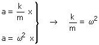
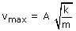

Velocidad del movimiento armónico: v = A·ω cos (ω·t) La velocidad máxima (Módulo) será entonces: vmax = A·ω La relación entre k y ω se obtiene comparando las expresiones del módulo de la aceleración obtenidas en cinemática y en dinámica:  Entonces la velocidad máxima será:  El cuerpo unido al muelle de mayor k tendrá mayor velocidad máxima |